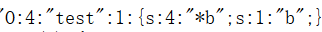

序列化和反序列化
序列化和反序列化的作用是实现跨脚本共享数据和节省内存空间。PHP解释器执行完一个脚本后，所有存储变量值、数组、对象的内存都会被释放，无法再被引用这些数据。因此，如果另一个脚本想再次引用这些变量值等数据时，需要这些数据存在于内存时方可引用。但是，内存中这些变量值或者对象一直等到被下一脚本引用，就会浪费内存资源。此时，就可以利用序列化，序列化的作用就是将变量值、数组或者对象等数据暂时保存为一个字符串。等到要使用时，再利用反序列化将字符串转化为原来的数据类型。
相关函数
serialize($arg) // 序列化,return string
unserialize($arg) // 反序列化,return string
测试1
// 序列化和反序列化的结果
class test{
public $a="a";
protected $b="b";
private $c="c";
public function say(){
echo "我是类1";
}
}
echo "<pre>";
$test = new test();
$s = serialize($test); // 序列化
var_dump($s);
$uns = unserialize($s); // 反序列化
var_dump($uns);
结果：
string(72) "O:4:"test":3:{s:1:"a";s:1:"a";s:4:"*b";s:1:"b";s:7:"testc";s:1:"c";}"
object(test)#2 (3) {
["a"]=>
string(1) "a"
["b":protected]=>
string(1) "b"
["c":"test":private]=>
string(1) "c"
}
注意：
（1）protected属性序列化后

* 是一个特殊字符，长度为3。
（2）private属性序列化后

testc 的"test"是类名，7是变量名"c"加类名"test"，以及2个特殊字符  ，这个字符无法用键盘打印出来。
，这个字符无法用键盘打印出来。
，这个字符无法用键盘打印出来。（3）类方法不能被序列化。
测试2
// 缺少部分属性反序列化后的结果
class func{
public $a="class2";
protected $b='123';
private $c;
}
$s = 'O:4:"func":1:{s:1:"a";s:6:"class3";}'; // 序列化字符串只有一个属性
$test = unserialize($s);
var_dump($test);
结果：
object(func)#1 (3) {
["a"]=> // a属性的值为序列化字符串中表示的值
string(6) "class3"
["b":protected]=> // 补充所属类的属性，值为默认值
string(3) "123"
["c":"func":private]=> // private属性同样被补充
NULL
}
测试3
// 序列化字符串格式错误的结果
class func{
public $a="class2";
protected $b='123';
private $c;
}
$s = 'O:4:"func":1:{s:1:"a";s:10:"class3";}'; // 值的长度改为 10
$test = unserialize($s);
var_dump($test);
结果：
bool(false) // 反序列化失败，无法得到对象
__destruct()析构方法
析构方法在对象被销毁时引用，对象被销毁的时机：
（1）对象没有被引用，或者说没有一个变量指向对象，为了节省内存空间，垃圾回收机制将回收存储这个对象的内存。
（2）程序结束时，所有的内存都被释放。
测试4
// 程序结束时销毁对象
class func{
public $a="class2";
public function __destruct(){
echo "destruct";
}
}
$func = new func();
$s = serialize($func); // 序列化后并不会触发析构方法，因为还有$func引用对象，谨记！！
var_dump($func)
结果：
object(func)#1 (1) {
["a"]=>
string(6) "class2"
}
destruct
测试5
// 对象不被引用
class func{
public $a="class2";
public function __destruct(){
echo "destruct";
}
}
$func = new func();
$func = null; // null和空字符串的区别：值为null的变量没有分配内存，值为空字符串的变量有分配内存
echo "已经不存在对象了";
结果：
destruct已经不存在对象了 //destruct先被打印，说明程序在结束之前对象已经不存在，然后调用了析构方法；unset()是销毁变量，因此销毁后对象也不存在了，结果与此一致
测试6
// 排除错误理解
class func{
public $a="class2";
public function __destruct(){
echo "destruct";
}
}
$func = new func(); // $func对象
$s = serialize($func);
$f = unserialize($s); // $f对象
echo '$func和$f两个对象都存在';
结果：
$func和$f两个对象都存在 destruct destruct // 说明两次析构方法是$func和$f对象在程序结束时被销毁的调用